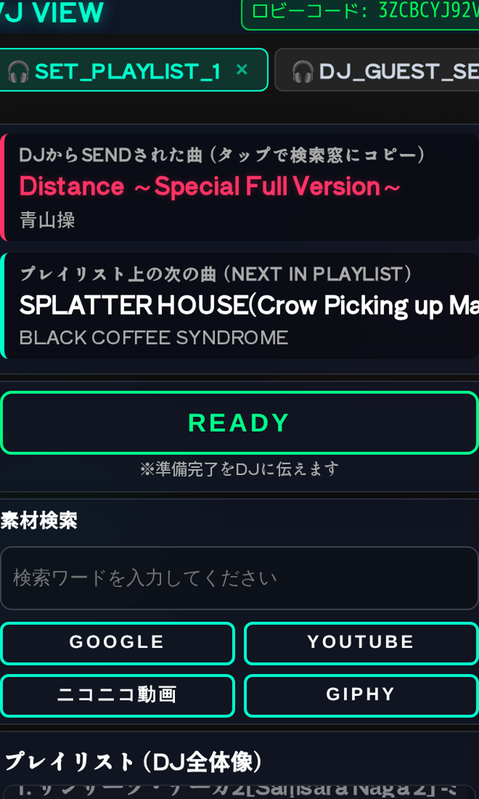
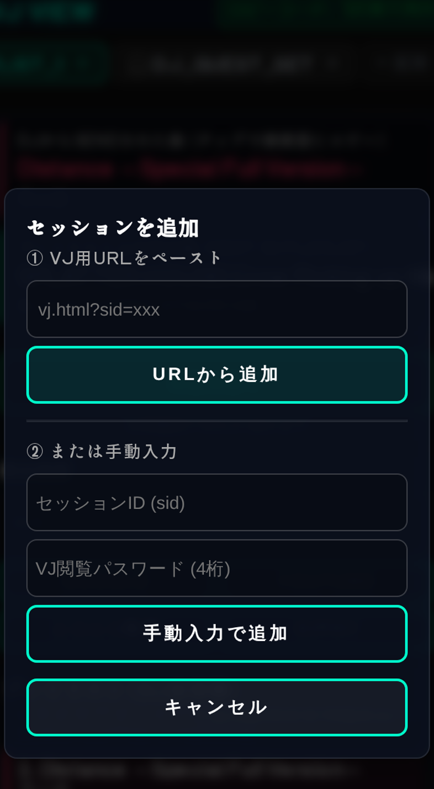
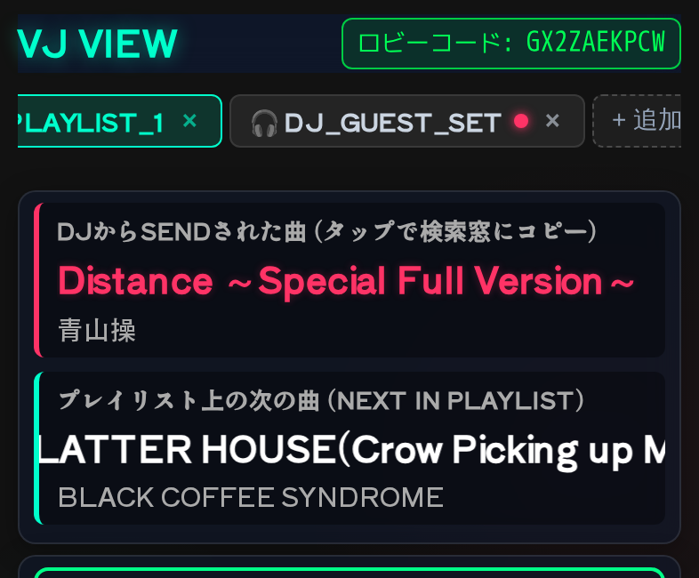

VJ向け 機能・操作説明書
DJから届く曲情報を受け取り、素材を検索し、準備完了をREADYで返すための現場向けガイドです。複数DJをタブで管理する流れを中心に説明します。
1VJロビーを開始する
VJページで 📡 VJロビーを開く (おすすめ) を押します。10文字のロビーコードが発行されたらDJへ共有してください。
DJは登録完了画面から同じコードを送信します。VJ側のパスワードをDJへ伝える必要はありません。
ロビーには連携済みDJセッションの件数と一覧が表示され、DJの追加を待機できます。

2DJセッションを連携する
DJがコードを登録完了画面へ入力して送信すると、VJロビーにDJ名が表示されます。人数表示と一覧を確認してください。
- コードをDJへ共有します。
- DJがロビーへ送信するのを待ちます。
- 一覧にDJが表示されたら連携完了です。
複数のDJが同じコードを使えば、同じロビーからまとめて受け付けられます。
3VJモードを開始する
連携済みDJが1つ以上表示されたら、📺 VJモードを開始するを押します。VJ VIEWへ移動し、セッションタブ、受信曲、READY、素材検索、プレイリストを使えるようになります。
VJ VIEWでは上部のタブで操作対象DJを選択します。

4DJから曲を受け取る
DJが SEND TO VJ を押すと、選択中DJの「DJからSENDされた曲」が更新されます。曲名とアーティスト名を確認してください。
受信曲のタイトルまたはアーティスト名をタップすると、素材検索欄へコピーできます。プレイリストは画面下部で確認します。
プレイリスト外の手入力情報には [VIBES!] バッジが付きます。曲名ではなくMCや連絡事項の場合もあります。
5素材を検索する
受信曲のタイトル・アーティスト名をタップして検索欄へコピーするか、検索欄へ直接入力します。検索先を押すと別タブで結果が開きます。
曲名だけでなくアーティスト名、MV、ライブ映像などの語を加えると候補を絞りやすくなります。
6準備完了をREADYで返す
素材を用意できたら、対象DJのタブを選択した状態で READY を押します。DJ側の「VJにSENDした曲」にREADY状態が反映されます。
READYは現在選択中のDJセッションへ送られます。複数DJを管理しているときは、タブ名を確認してから押してください。
7複数DJをタブで管理する
上部のセッションタブをタップすると、操作対象DJを切り替えられます。現在のDJ名がアクティブ表示されます。
見ていないDJから新しい曲が届くと、そのタブに赤い未読丸が付きます。バッジの付いたタブを開いて受信曲を確認してください。

8セッションを追加する
ロビーを使わずに追加する場合、上部の + セッション追加 を押します。
- DJから受け取ったVJ用URLを貼り付けて URLから追加。
- または、セッションIDと4桁のVJ閲覧パスワードを入力して 手動入力で追加。
追加後はセッションタブに表示されます。URLやパスワードは必要な相手にだけ共有してください。

9セッションを削除・復帰する
不要になったセッションは、対象タブの削除操作から外します。開催中のセッションを削除するとDJとの連携が切れるため注意してください。
同じブラウザに保存された復帰情報は8時間で失効します。復帰できない場合は、DJからVJ用URLを再共有してもらい、URLまたは手動入力で追加してください。

10困ったとき
- ロビーコードが表示されない: VJページを再読み込みし、VJロビーを開くを押し直します。
- DJが追加されない: 10文字のコード、大文字・小文字、DJ側の送信状態を確認します。
- 曲が更新されない: 対象DJのタブ、通信状態、画面の未読バッジを確認します。
- READYが届かない: READYを押す前に対象DJのタブを選び直します。
- 検索ボタンを押しても開かない: 検索欄の内容とブラウザのポップアップ制限を確認します。
+DJとVJを兼任する（VDJ）
VDJとして使う場合は、先にVJロビーを作成してからDJ登録へ進みます。VJロビー画面の DJとしても参加する（登録へ） を押すと、ロビーコードが登録ページへ引き継がれます。
- VJロビーを開くでロビーを作成します。
- ロビーコードを確認し、DJとしても参加する（登録へ）へ進みます。
- プレイリストを登録し、登録完了画面でコードを確認して送信します。
- DJ用URLとVJ操作画面を別タブで開き、DJ画面のVJ検索タブも必要に応じて使います。
- VJ画面で素材を検索し、対象DJを選択してREADYを返します。
VDJもスマートフォン・PCのどちらでも利用できます。2画面を同時に扱う場合は、PCや複数端末が便利です。